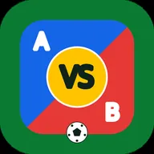
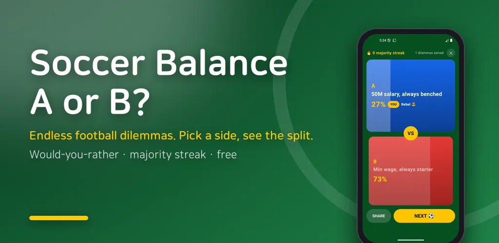
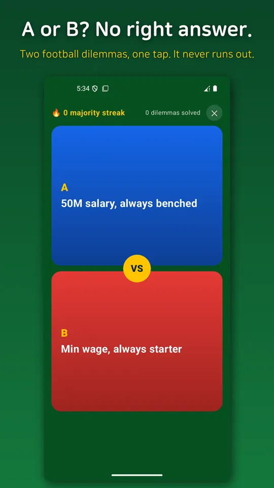
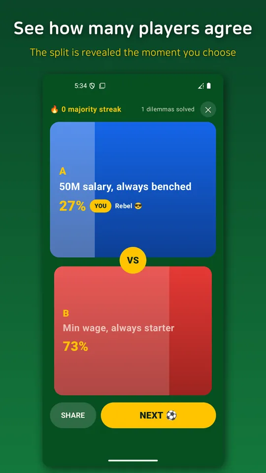
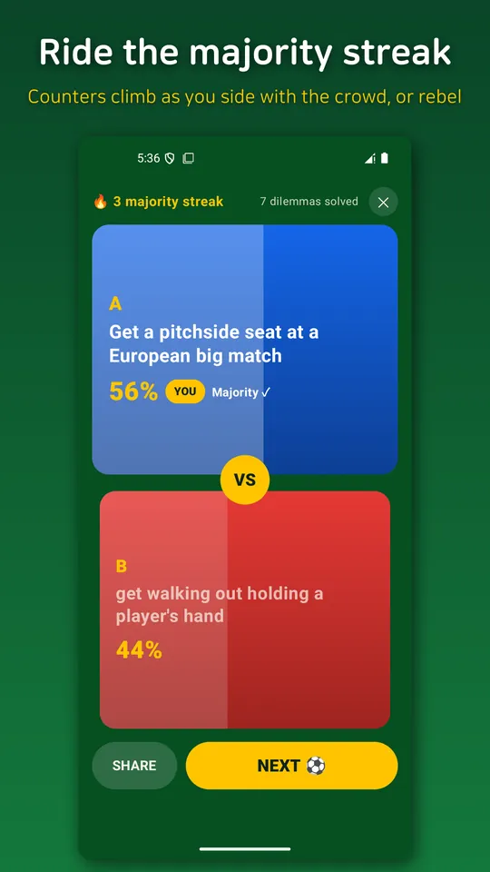
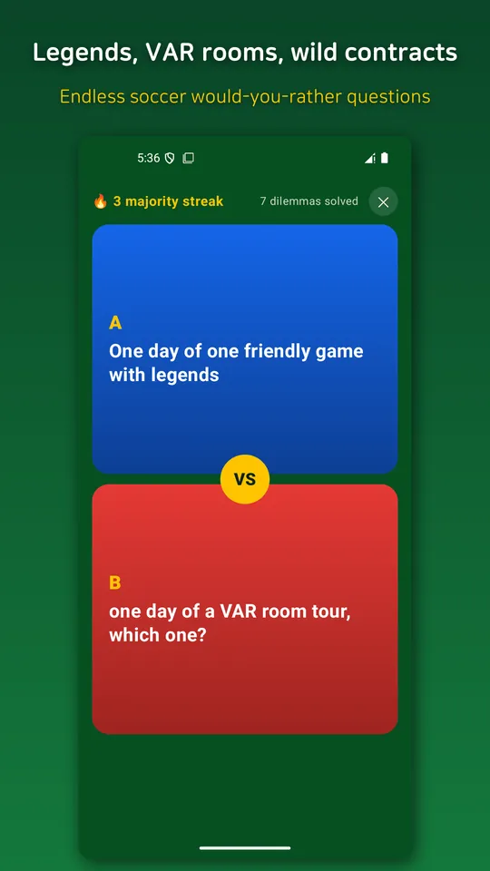
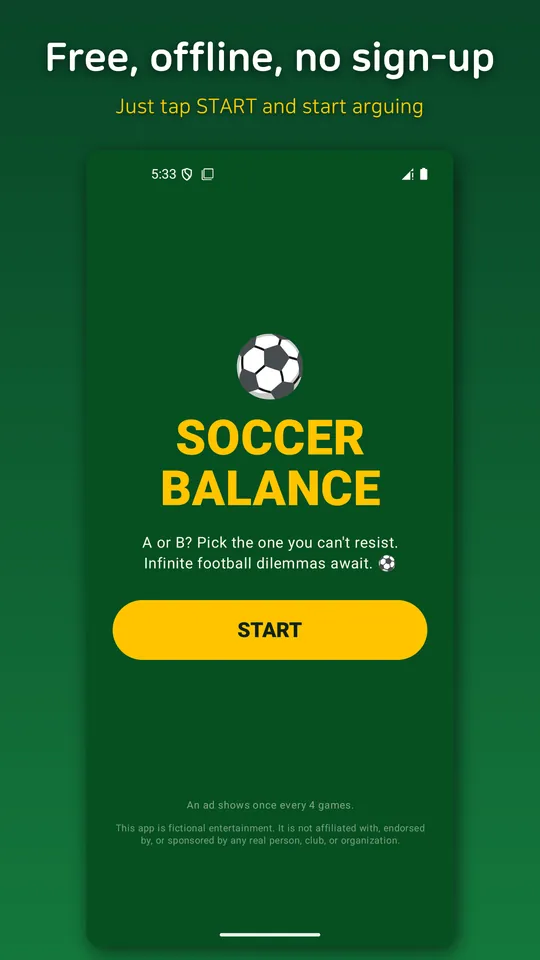

Would You Rather: Soccer Game
Soccer balance game: pick A or B. Endless would you rather questions for fun.






About this app
Pick one. Both choices are absolutely cursed.
"Selfie with a legend vs dinner with his rival"
"Your team wins it all vs your rival gets relegated"
"Take the penalty vs save the penalty"
Every brain-melting soccer dilemma, all in one place. Ride the soccer season hype with this A vs B balance game and solve life's greatest questions with a single tap (sort of).
▼ What you get
- 🔥 Truly endless: 200 hand-picked questions + 23,000+ auto-generated combos. You won't finish them on one bathroom break.
- 📊 Fake-vote stats: Pick a side and instantly see "what % chose the same as you." Are you the majority or the menace?
- 🤪 Maximum chaos: Take it seriously and you lose. Ridiculous, laugh-out-loud options all the way down.
- 📴 Fully offline: No server, no internet needed. Subway, plane, middle of nowhere, it just works.
- 💸 100% free: Costs absolutely nothing. Zero pressure.
▼ When to open it
- Settling who's the bigger lunatic at the bar with friends
- Screenshotting it into the group chat to start a "what'd YOU pick" brawl
- Hyping yourself up before the big match
- Trying to kill 5 seconds and losing 30 minutes instead
For football fans, balance-game addicts, and anyone whose hands shake when forced to choose. No quiz, no right answers, no pressure. Just pick.
Alright, first question. Selfie with a legend vs dinner with his rival. Ready?
Android · free with ads · Developer: RealTunaLove · Store listing in 17 languages
Background story: why I built it